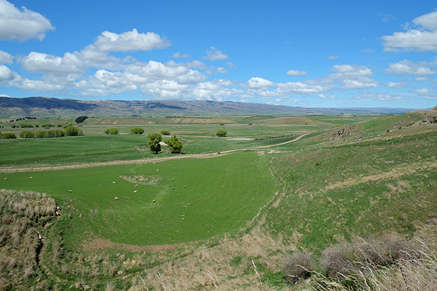
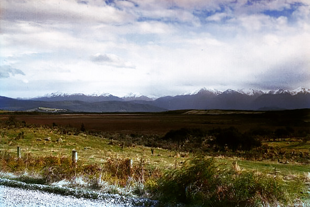

Lord Of The Rings: The Two Towers
Main Content

In episode two, the fellowship is falling apart, Boromir is dead and Saruman (Christopher Lee) has plans to wage war on Middle Earth.
Of course, New Zealand again supplies the varied landscapes of Tolkien’s fantastic realm.
First to the South Island and the area around Queensland. About 40 miles southeast of the city, on State Highway 6, is the town of Alexandra. Around Poolburn Reservoir in the Ida Valley, about 25 miles east of Alexandra, stood the village on the ‘Plains of Rohan’, where the children are sent off to safety before the Orc attack. The village set built here no longer stands.
In the area around Poolburn Reservoir on Rough Ridge in the Ida Valley about 25 miles east of Alexandra, stood the village on the ‘Plains of Rohan’, where the children are sent off to safety before the Orc attack. Your best bet is to visit from Bonspiel Station, a working farm with accommodation on Moa Creek Road, about five miles south of Poolburn. From here there are tours to Poolburn Dam and the movie filming sites.
For practical reasons, the ‘Dead Marshes’ had to be created on sets, but the wider landscape shots are the Kepler Mire, largest of the wetlands in the Te Anau basin, west of Queenstown in the Fiordland region and an important nature conservancy area, which gave rise to concern about the effect filming might have on the delicate ecosystem.

The Kepler Mire (named after astronomer Johannes Kepler), and also descriptively known as Dismal Swamp, is a String bog (a feature subject to repeated freezing and thawing, often found near glaciers and ice sheets), which covers more than 2000 acres east of State Highway 95 between Te Anau and Manapouri.
You can best view the bog from the Mount York Road, running east off Highway 95.
On the southwestern tip of North Island, the huge fortress city of ‘Minas Tirith’ and ‘Helm’s Deep’, where the awesome climactic battle takes place, were built at Dry Creek Quarry, a vast mining complex surrounded by a chainlink fence on Western Hutt Road at the bottom of Haywards Hill in Wellington (rail: Manor Park). Since Dry Creek remains a working quarry, the sets were dismantled after filming.
Visit Info
Visit The Film Locations
New Zealand
Visit: New Zealand
NORTH ISLAND
Visit: Wellington
Flights: Wellington International Airport, Stewart Duff Drive, Rongotai, Wellington 6022 (tel: +64.4.385.5100)
SOUTH ISLAND
Visit: Queenstown
Flights: Queenstown Airport, Sir Henry Wigley Drive, Frankton, Queenstown 9300 (tel: +64 3-450 9031)
Visit: Bonspiel Station, Moa Creek Road, Moa Creek, Central Otago (tel: 03.447.4205)
Visit: Fiordland National Park, Lakefront Drive, Te Anau 9640 (tel: +64.3.249.7924)